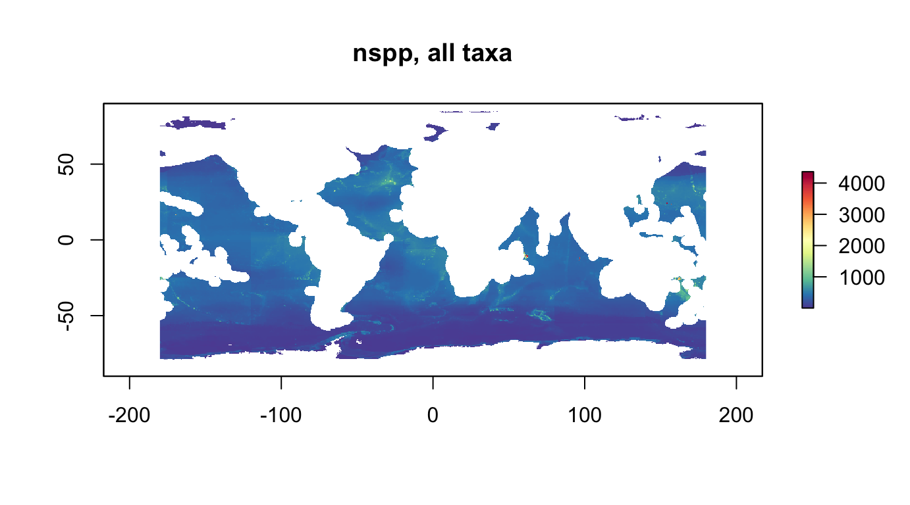
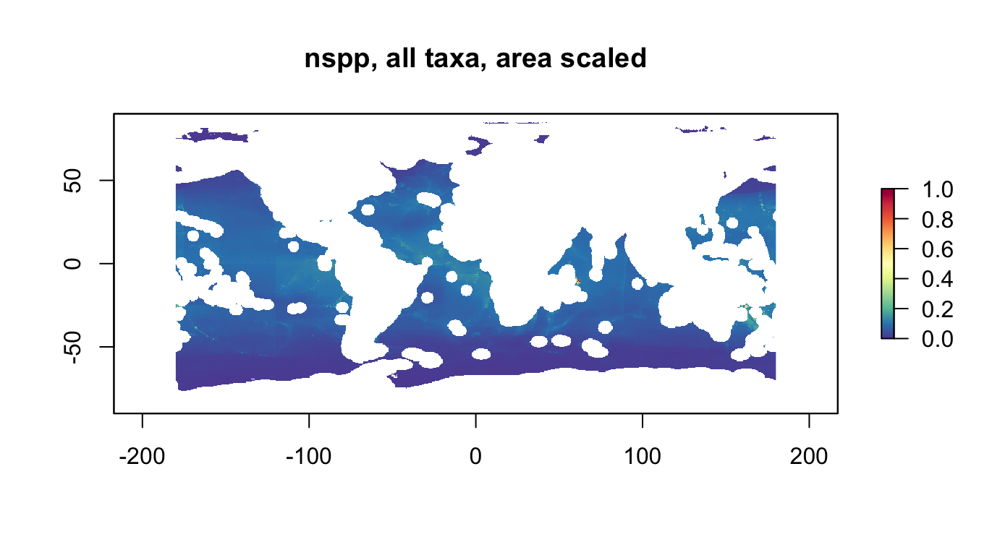
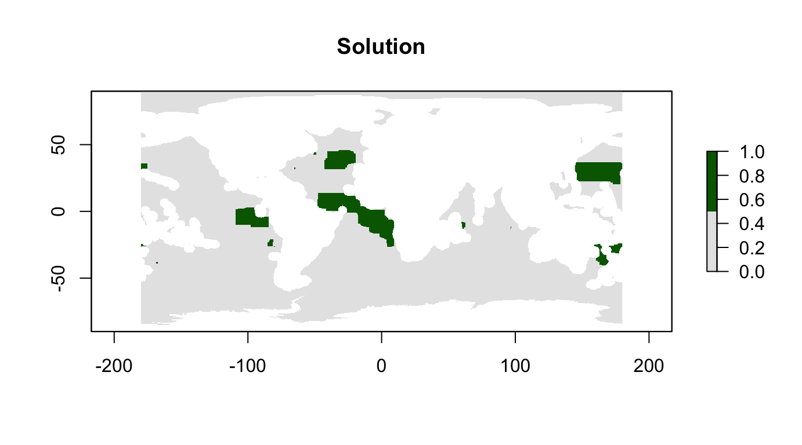

Explore prioritizr
Ben Best
2019-02-27
Source:vignettes/prioritizr_explore.Rmd
prioritizr_explore.RmdSetup
suppressPackageStartupMessages({
library(tidyverse)
library(here)
library(glue)
library(raster)
library(sf)
library(leaflet)
library(RColorBrewer)
library(rasterVis)
library(prioritizr) # install.packages("prioritizr")
#library(bbnj)
devtools::load_all()
})
dir_data <- "~/Gdrive Ecoquants/projects/bbnj/data"
cell_res <- 0.5 # n= 113,401
p_boundary_shp <- glue("{dir_data}/derived/boundary/high_seas.shp")
r_pu_id_tif <- glue("{dir_data}/derived/boundary/high_seas_cellid_{cell_res}dd.tif")Planning Units
Using half-degree global raster (resolution of AquaMaps, GFW, …).
# get planning unit raster
r_pu_id <- raster(r_pu_id_tif)
pal <- colorRampPalette(brewer.pal(11, "Spectral"))
cols <- rev(pal(255))
plot(r_pu_id, col = cols, main="pu_id")


Conservation Targets
Biodiversity
All the species distribution data was generously provided as comma-seperated value (csv) files in a zip package aquamaps_ver0816c.zip by Kristin Kaschner and Cristina Garilao to Ben Best ben@ecoquants.com on Jun 21, 2018 from the extensive work available at http://AquaMaps.org to be fully cited (K. Kaschner et al. 2016) whenever used. For details on generating indicators, see Calculate Indicators • gmbi:
Note that a probability ≥ 0.5 was used to convert AquaMaps relative environmental suitability (RES) from continuous [0 - 1] to binary [0,1] (Klein et al. 2015; O’Hara et al. 2017).
nspp: number of species, ie species richnessrls: Red List Sum (RLS)
The Red List Sum (RLS) is the numerator from the Red List Index (RLI) ((Butchart et al. 2007; Juslén et al. 2016):
\[RLS = \sum_{i=1}^{n_{spp}} w_i\]
We will use only the numerator, the Red List Sum (RLS), of the Red List Index (RLI) to quantify the “endangeredness” of a cell without dilution from being in a species-rich place as the RLI does when averaging the extinction risk for all assessed species. For more details see Calculate extinction risk - Calculate Indicators • gmbi.
These indicators were calculated for all species as well as taxonomic groups defined in Assign taxonomic groups - Calculate Indicators • gmbi.
With rasters from R package marinebon/gmbi, mask rasters to high seas planning units and save into this R package:
library(gmbi) # devtools::install_github("marinebon/gmbi")
dir_bio <- here("inst/data/biodiversity")
redo = F
tifs_gmbi <- list.files(system.file("rasters", package="gmbi"), full.names = T)
tifs_bbnj <- file.path(dir_bio, basename(tifs_gmbi))
if (!all(file.exists(tifs_bbnj)) | redo){
for (i in 1:length(tifs_gmbi)){ # i=27
tif_gmbi <- tifs_gmbi[i]
tif_bbnj <- tifs_bbnj[i]
r <- raster(tif_gmbi) %>%
mask(r_pu_id)
# in some cases masking by high seas might return all NAs, in which case skip
if (sum(!is.na(values(r))) == 0) next()
writeRaster(r, tif_bbnj, overwrite=T)
}
}
basename(tifs_bbnj)## [1] "nspp_all.tif" "nspp_bivalves.tif"
## [3] "nspp_chitons.tif" "nspp_coastal.fishes.tif"
## [5] "nspp_corals.tif" "nspp_crustaceans.tif"
## [7] "nspp_echinoderms.tif" "nspp_euphausiids.tif"
## [9] "nspp_gastropods.tif" "nspp_hydrozoans.tif"
## [11] "nspp_mangroves.tif" "nspp_na.tif"
## [13] "nspp_non-squid.cephalopods.tif" "nspp_pinnipeds.tif"
## [15] "nspp_reptiles.tif" "nspp_sea.spiders.tif"
## [17] "nspp_seagrasses.tif" "nspp_sharks.tif"
## [19] "nspp_sponges.tif" "nspp_tunas.n.billfishes.tif"
## [21] "nspp_tunicates.tif" "nspp_worms.tif"
## [23] "rls_all.tif" "rls_bivalves.tif"
## [25] "rls_coastal.fishes.tif" "rls_corals.tif"
## [27] "rls_crustaceans.tif" "rls_echinoderms.tif"
## [29] "rls_gastropods.tif" "rls_na.tif"
## [31] "rls_non-squid.cephalopods.tif" "rls_pinnipeds.tif"
## [33] "rls_reptiles.tif" "rls_sharks.tif"
## [35] "rls_tunas.n.billfishes.tif"
nspp, all taxa
tif <- system.file("data/biodiversity/nspp_all.tif", package="bbnj")
r_nspp_all <- raster(tif)
plot(r_nspp_all, col = cols, main="nspp, all taxa")
nspp, all taxa
r_nspp_all_as <- area_scale_raster(r_nspp_all, r_pu_area)
plot(r_nspp_all_as, col = cols, main="nspp, all taxa, area scaled")
nspp, by taxonomic group
# get all tifs, except first one "nspp_all.tif"
tifs <- list.files(
system.file("data/biodiversity", package="bbnj"),
"^nspp_.*.tif$", full.names = T)[-1]
s_nspp_groups <- stack(tifs)
names(s_nspp_groups) <- str_replace(names(s_nspp_groups), "nspp_", "")
plot(s_nspp_groups, col = cols)
rls, all taxa
tif <- system.file("data/biodiversity/rls_all.tif", package="bbnj")
r_rls_all <- raster(tif)
plot(r_rls_all, col = cols, main="rls, all taxa")
rls, by taxonomic group
# get all tifs, except first one "nspp_all.tif"
tifs <- list.files(
system.file("data/biodiversity", package="bbnj"),
"^nspp_.*.tif$", full.names = T)[-1]
s_nspp_groups <- stack(tifs)
names(s_nspp_groups) <- str_replace(names(s_nspp_groups), "nspp_", "")
plot(s_nspp_groups, col = cols)
Priotizr Scenarios
p01: 10%, r_nspp_all_as
Maximize overall biodiversity, given a budget of 10% of all high seas area.
p01 <- problem(r_pu_areas, r_nspp_all_as) %>%
add_max_utility_objective(budget = 10) %>% # 10% of total high seas area
add_gurobi_solver()
p01_sol <- solve(p01)## Optimize a model with 2 rows, 113402 columns and 215357 nonzeros
## Variable types: 1 continuous, 113401 integer (113401 binary)
## Coefficient statistics:
## Matrix range [6e-06, 1e+00]
## Objective range [6e-10, 1e+00]
## Bounds range [1e+00, 5e+03]
## RHS range [1e+01, 1e+01]
## Found heuristic solution: objective -0.0000000
## Presolve removed 0 rows and 79328 columns
## Presolve time: 1.52s
## Presolved: 2 rows, 34074 columns, 68147 nonzeros
## Variable types: 1 continuous, 34073 integer (13583 binary)
## Presolve removed 0 rows and 33031 columns
## Presolved: 2 rows, 1043 columns, 2085 nonzeros
##
##
## Root relaxation: objective 9.920199e+02, 3 iterations, 0.05 seconds
##
## Nodes | Current Node | Objective Bounds | Work
## Expl Unexpl | Obj Depth IntInf | Incumbent BestBd Gap | It/Node Time
##
## 0 0 992.01994 0 1 -0.00000 992.01994 - - 1s
## H 0 0 991.9809686 992.01994 0.00% - 1s
##
## Explored 1 nodes (3 simplex iterations) in 2.00 seconds
## Thread count was 1 (of 12 available processors)
##
## Solution count 2: 991.981 -0
##
## Optimal solution found (tolerance 1.00e-01)
## Best objective 9.919809686092e+02, best bound 9.920199437738e+02, gap 0.0039%
# area of solution
cellStats(r_pu_areas * p01_sol, "sum")## [1] 9.999548# calculate how well features are represented in the solution
feature_representation(p01, p01_sol)## # A tibble: 1 x 3
## feature absolute_held relative_held
## <chr> <dbl> <dbl>
## 1 layer 992. 0.181
p02: 10%, r_nspp_all_as, 2 nbrs
Maximize overall biodiversity, given a budget of 10% of all high seas area, and require 2 rook-style neighbors for all cells in the solution.
p02 <- problem(r_pu_areas, r_nspp_all_as) %>%
add_neighbor_constraints(2) %>% # require # of rook neighbors
add_max_utility_objective(budget = 10) %>% # budget = % of total high seas area
add_gurobi_solver()
# solve the problem
p02_sol <- solve(p02)## Optimize a model with 113403 rows, 113402 columns and 774182 nonzeros
## Variable types: 1 continuous, 113401 integer (113401 binary)
## Coefficient statistics:
## Matrix range [6e-06, 2e+00]
## Objective range [6e-10, 1e+00]
## Bounds range [1e+00, 5e+03]
## RHS range [1e+01, 1e+01]
## Found heuristic solution: objective -0.0000000
## Presolve removed 255 rows and 327 columns
## Presolve time: 1.62s
## Presolved: 113148 rows, 113075 columns, 671012 nonzeros
## Variable types: 0 continuous, 113075 integer (113075 binary)
## Presolved: 113148 rows, 113075 columns, 671012 nonzeros
##
##
## Root relaxation: objective 9.887442e+02, 1142 iterations, 0.55 seconds
##
## Nodes | Current Node | Objective Bounds | Work
## Expl Unexpl | Obj Depth IntInf | Incumbent BestBd Gap | It/Node Time
##
## 0 0 988.74424 0 528 -0.00000 988.74424 - - 2s
## H 0 0 984.4004167 988.74424 0.44% - 3s
##
## Explored 1 nodes (1148 simplex iterations) in 3.52 seconds
## Thread count was 1 (of 12 available processors)
##
## Solution count 2: 984.4 -0
##
## Optimal solution found (tolerance 1.00e-01)
## Best objective 9.844004167298e+02, best bound 9.887442387933e+02, gap 0.4413%
# area of solution
cellStats(r_pu_areas * p02_sol, "sum")## [1] 9.999843# calculate how well features are represented in the solution
tbl_rep <- feature_representation(p02, p02_sol)
tbl_rep## # A tibble: 1 x 3
## feature absolute_held relative_held
## <chr> <dbl> <dbl>
## 1 layer 984. 0.180The p02 result looks nearly same as p01, only tiny bit lower value in biodiversity held, presumably because of neighbor constraint.
p03: 10%, r_nspp_all_as, 3 nbrs
Maximize overall biodiversity, given a budget of 10% of all high seas area, and require 4 rook-style neighbors for all cells in the solution.
p03 <- problem(r_pu_areas, r_nspp_all_as) %>%
add_neighbor_constraints(3) %>% # require # of rook neighbors
add_max_utility_objective(budget = 10) %>% # budget = % of total high seas area
add_gurobi_solver()
# solve the problem
p03_sol <- solve(p03)## Optimize a model with 113403 rows, 113402 columns and 774182 nonzeros
## Variable types: 1 continuous, 113401 integer (113401 binary)
## Coefficient statistics:
## Matrix range [6e-06, 3e+00]
## Objective range [6e-10, 1e+00]
## Bounds range [1e+00, 5e+03]
## RHS range [1e+01, 1e+01]
## Found heuristic solution: objective -0.0000000
## Presolve removed 110521 rows and 111958 columns
## Presolve time: 1.49s
## Presolved: 2882 rows, 1444 columns, 11524 nonzeros
## Found heuristic solution: objective 34.9344798
## Variable types: 0 continuous, 1444 integer (1444 binary)
##
## Explored 0 nodes (0 simplex iterations) in 1.55 seconds
## Thread count was 1 (of 12 available processors)
##
## Solution count 1: 34.9345
##
## Optimal solution found (tolerance 1.00e-01)
## Best objective 3.493447980634e+01, best bound 3.493447980634e+01, gap 0.0000%
# area of solution
cellStats(r_pu_areas * p03_sol, "sum")## [1] 2.735375# calculate how well features are represented in the solution
tbl_rep <- feature_representation(p03, p03_sol)
tbl_rep## # A tibble: 1 x 3
## feature absolute_held relative_held
## <chr> <dbl> <dbl>
## 1 layer 34.9 0.00637Whoah, funk! Band around Antarctica with 3 neighbor constraint.
p04: 10%, r_nspp_all_as, 4 nbrs
Maximize overall biodiversity, given a budget of 10% of all high seas area, and require 4 rook-style neighbors for all cells in the solution.
p04 <- problem(r_pu_areas, r_nspp_all_as) %>%
add_neighbor_constraints(3) %>% # require # of rook neighbors
add_max_utility_objective(budget = 10) %>% # budget = % of total high seas area
add_gurobi_solver()
# solve the problem
p04_sol <- solve(p04)## Optimize a model with 113403 rows, 113402 columns and 774182 nonzeros
## Variable types: 1 continuous, 113401 integer (113401 binary)
## Coefficient statistics:
## Matrix range [6e-06, 3e+00]
## Objective range [6e-10, 1e+00]
## Bounds range [1e+00, 5e+03]
## RHS range [1e+01, 1e+01]
## Found heuristic solution: objective -0.0000000
## Presolve removed 110521 rows and 111958 columns
## Presolve time: 1.46s
## Presolved: 2882 rows, 1444 columns, 11524 nonzeros
## Found heuristic solution: objective 34.9344798
## Variable types: 0 continuous, 1444 integer (1444 binary)
##
## Explored 0 nodes (0 simplex iterations) in 1.53 seconds
## Thread count was 1 (of 12 available processors)
##
## Solution count 1: 34.9345
##
## Optimal solution found (tolerance 1.00e-01)
## Best objective 3.493447980634e+01, best bound 3.493447980634e+01, gap 0.0000%
# area of solution
cellStats(r_pu_areas * p04_sol, "sum")## [1] 2.735375# calculate how well features are represented in the solution
tbl_rep <- feature_representation(p04, p04_sol)
tbl_rep## # A tibble: 1 x 3
## feature absolute_held relative_held
## <chr> <dbl> <dbl>
## 1 layer 34.9 0.00637Whoah, funk! Whole ocean with 4 neighbor constraint.
p05: 10%, r_nspp_all_as, blm(0.1,1)
Maximize overall biodiversity, given a budget of 10% of all high seas area, and enforce boundary length modifier.
- Conservation problem penalties — penalties • prioritizr
- Add boundary penalties — add_boundary_penalties • prioritizr
p05 <- problem(r_pu_areas, r_nspp_all_as) %>%
add_boundary_penalties(0.1, 1) %>% # boundary penalty (penalty, edge_factor)
add_max_utility_objective(budget = 10) %>% # budget = % of total high seas area
add_gurobi_solver()
# solve the problem
p05_sol <- solve(p05)## Optimize a model with 445426 rows, 336114 columns and 1106205 nonzeros
## Variable types: 1 continuous, 336113 integer (336113 binary)
## Coefficient statistics:
## Matrix range [6e-06, 1e+00]
## Objective range [1e-01, 1e+00]
## Bounds range [1e+00, 5e+03]
## RHS range [1e+01, 1e+01]
## Found heuristic solution: objective -0.0000000
## Presolve removed 307 rows and 332 columns (presolve time = 5s) ...
## Presolve removed 307 rows and 332 columns
## Presolve time: 5.31s
## Presolved: 445119 rows, 335782 columns, 1003482 nonzeros
## Variable types: 0 continuous, 335782 integer (335782 binary)
## Presolve removed 28 rows and 20 columns
## Presolved: 445091 rows, 335762 columns, 1003416 nonzeros
##
##
## Root simplex log...
##
## Iteration Objective Primal Inf. Dual Inf. Time
## 0 5.2811413e+03 4.691419e+04 0.000000e+00 7s
## 11028 5.1894449e+03 2.104795e+06 0.000000e+00 11s
## 11478 5.1706063e+03 3.270332e+05 0.000000e+00 15s
## 12198 5.1390221e+03 3.433654e+05 0.000000e+00 21s
## 12738 5.1110591e+03 3.410413e+05 0.000000e+00 26s
## 13278 5.0825191e+03 5.273378e+05 0.000000e+00 31s
## 13818 5.0614978e+03 9.367159e+05 0.000000e+00 35s
## 14358 5.0355854e+03 7.133616e+05 0.000000e+00 40s
## 15078 5.0035956e+03 3.423103e+05 0.000000e+00 46s
## 15618 4.9818296e+03 7.305437e+05 0.000000e+00 51s
## 16158 4.9616520e+03 3.596111e+05 0.000000e+00 56s
## 16698 4.9435070e+03 3.150563e+05 0.000000e+00 61s
## 17238 4.9260596e+03 9.064308e+05 0.000000e+00 66s
## 17778 4.9030041e+03 3.409031e+05 0.000000e+00 70s
## 18318 4.8841030e+03 3.117613e+05 0.000000e+00 75s
## 18858 4.8624169e+03 3.092854e+05 0.000000e+00 80s
## 19578 4.8377971e+03 5.989489e+05 0.000000e+00 86s
## 20118 4.8178510e+03 6.237765e+05 0.000000e+00 91s
## 20658 4.8021491e+03 6.741832e+05 0.000000e+00 96s
## 21108 4.7545763e+03 6.938372e+05 0.000000e+00 100s
## 21828 4.7254514e+03 6.536626e+05 0.000000e+00 106s
## 22368 4.7087139e+03 5.823575e+05 0.000000e+00 111s
## 22908 4.6885229e+03 7.505135e+05 0.000000e+00 116s
## 23448 4.6707000e+03 6.782169e+05 0.000000e+00 121s
## 23988 4.6491052e+03 6.871696e+05 0.000000e+00 126s
## 24528 4.6283332e+03 3.131876e+05 0.000000e+00 130s
## 25188 4.5997505e+03 6.666840e+05 0.000000e+00 136s
## 25658 4.5788129e+03 4.887108e+05 0.000000e+00 140s
## 26328 4.5516733e+03 6.714165e+05 0.000000e+00 146s
## 26888 4.5307422e+03 2.940307e+05 0.000000e+00 151s
## 27468 4.5092876e+03 2.888859e+05 0.000000e+00 156s
## 28028 4.4894530e+03 4.668908e+05 0.000000e+00 161s
## 28578 4.4684081e+03 4.808006e+05 0.000000e+00 165s
## 29178 4.4476104e+03 2.835694e+05 0.000000e+00 170s
## 29768 4.4293018e+03 2.853053e+05 0.000000e+00 176s
## 30368 4.4124161e+03 2.816128e+05 0.000000e+00 181s
## 30968 4.3950839e+03 4.489165e+05 0.000000e+00 186s
## 31468 4.3818822e+03 2.808383e+05 0.000000e+00 190s
## 32068 4.3668646e+03 5.375679e+05 0.000000e+00 195s
## 32668 4.0951480e+03 6.969673e+05 0.000000e+00 200s
## 33268 4.0225100e+03 3.922647e+05 0.000000e+00 205s
## 33868 3.9981165e+03 2.928323e+05 0.000000e+00 210s
## 34468 3.9730091e+03 4.671643e+05 0.000000e+00 215s
## 35068 3.9476769e+03 3.809139e+05 0.000000e+00 220s
## 35768 3.9175340e+03 8.103603e+05 0.000000e+00 226s
## 36368 3.8903165e+03 3.247835e+05 0.000000e+00 231s
## 36968 3.8620517e+03 4.607431e+05 0.000000e+00 235s
## 37568 3.8318381e+03 3.063629e+05 0.000000e+00 240s
## 38168 3.8037609e+03 2.461116e+05 0.000000e+00 245s
## 38788 3.7740692e+03 4.027278e+05 0.000000e+00 251s
## 39148 3.7561118e+03 3.573332e+05 0.000000e+00 256s
## 39508 3.7376752e+03 3.903110e+05 0.000000e+00 261s
## 39868 3.7189179e+03 3.303605e+05 0.000000e+00 265s
## 40228 3.7005166e+03 4.563164e+05 0.000000e+00 270s
## 40588 3.6802696e+03 4.356751e+05 0.000000e+00 275s
## 40948 3.6590792e+03 3.969013e+05 0.000000e+00 280s
## 41428 3.6305366e+03 2.377845e+05 0.000000e+00 287s
## 41788 3.6086124e+03 3.879433e+05 0.000000e+00 291s
## 42148 3.5836130e+03 2.341783e+05 0.000000e+00 296s
## 42508 3.5585284e+03 5.075010e+05 0.000000e+00 301s
## 42868 3.5325409e+03 3.104752e+05 0.000000e+00 306s
## 43228 3.5058120e+03 5.448722e+05 0.000000e+00 311s
## 43588 3.4764973e+03 2.964161e+05 0.000000e+00 315s
## 43948 3.4456446e+03 1.687867e+05 0.000000e+00 320s
## 44308 3.4190127e+03 2.365124e+05 0.000000e+00 325s
## 44788 3.3814878e+03 3.723849e+05 0.000000e+00 331s
## 45148 3.3526475e+03 3.082418e+05 0.000000e+00 336s
## 45508 3.3206604e+03 3.525115e+05 0.000000e+00 341s
## 45868 3.2891674e+03 6.379960e+05 0.000000e+00 345s
## 46228 3.2578024e+03 3.137370e+05 0.000000e+00 350s
## 46708 3.2160589e+03 3.355534e+05 0.000000e+00 356s
## 47068 3.1848861e+03 1.631508e+05 0.000000e+00 361s
## 47428 3.1533632e+03 3.496268e+05 0.000000e+00 366s
## 47788 3.1219264e+03 4.035528e+05 0.000000e+00 370s
## 48188 3.0861707e+03 3.067241e+05 0.000000e+00 376s
## 48608 3.0471017e+03 3.396978e+05 0.000000e+00 381s
## 49028 3.0103447e+03 4.984586e+05 0.000000e+00 387s
## 49308 2.9901375e+03 2.445394e+05 0.000000e+00 390s
## 49728 2.9587177e+03 2.810945e+05 0.000000e+00 395s
## 50148 2.9285936e+03 3.061052e+05 0.000000e+00 401s
## 50568 2.8979813e+03 3.127253e+05 0.000000e+00 407s
## 50848 2.8796816e+03 2.997202e+05 0.000000e+00 410s
## 51268 2.8522657e+03 2.679037e+05 0.000000e+00 417s
## 51548 2.8334960e+03 2.665851e+05 0.000000e+00 421s
## 51968 2.8055003e+03 3.022694e+05 0.000000e+00 427s
## 52248 2.7849959e+03 2.899024e+05 0.000000e+00 431s
## 52528 2.7652779e+03 3.052698e+05 0.000000e+00 435s
## 52948 2.7330421e+03 2.839236e+05 0.000000e+00 441s
## 53368 2.7029059e+03 2.566187e+05 0.000000e+00 447s
## 53648 2.6857870e+03 5.872111e+05 0.000000e+00 451s
## 54068 2.6588170e+03 2.629554e+05 0.000000e+00 456s
## 54488 2.6318680e+03 7.601471e+05 0.000000e+00 462s
## 54768 2.6120480e+03 3.794274e+05 0.000000e+00 466s
## 55048 2.5937236e+03 2.947659e+05 0.000000e+00 470s
## 55468 2.5627731e+03 2.813071e+05 0.000000e+00 476s
## 55748 2.5455855e+03 2.512526e+05 0.000000e+00 480s
## 56168 2.5162679e+03 1.943151e+05 0.000000e+00 486s
## 56588 2.4883922e+03 2.455134e+05 0.000000e+00 492s
## 56868 2.4699944e+03 2.134982e+05 0.000000e+00 495s
## 57288 2.4432468e+03 2.039315e+05 0.000000e+00 501s
## 57708 2.4179932e+03 2.336636e+05 0.000000e+00 506s
## 57988 2.4008323e+03 1.324044e+05 0.000000e+00 510s
## 58408 2.3786006e+03 2.497496e+05 0.000000e+00 516s
## 58828 2.3567410e+03 2.707145e+05 0.000000e+00 522s
## 59108 2.3442650e+03 2.159365e+05 0.000000e+00 525s
## 59528 2.3256996e+03 1.913642e+05 0.000000e+00 531s
## 59948 2.3087282e+03 1.978053e+05 0.000000e+00 537s
## 60258 2.2964294e+03 2.143942e+05 0.000000e+00 541s
## 60578 2.2845995e+03 2.325611e+05 0.000000e+00 545s
## 61058 2.2672324e+03 2.549534e+05 0.000000e+00 552s
## 61378 2.2566453e+03 2.116070e+05 0.000000e+00 556s
## 61678 2.2455948e+03 1.919656e+05 0.000000e+00 560s
## 62098 2.2314659e+03 2.106566e+05 0.000000e+00 567s
## 62378 2.2228703e+03 1.914403e+05 0.000000e+00 572s
## 62658 2.2139203e+03 2.078041e+05 0.000000e+00 576s
## 62938 2.2047475e+03 1.117520e+05 0.000000e+00 580s
## 63358 2.1920598e+03 2.042097e+05 0.000000e+00 586s
## 63638 2.1828556e+03 1.978599e+05 0.000000e+00 591s
## 63918 2.1739167e+03 4.196831e+05 0.000000e+00 595s
## 64198 2.1655765e+03 2.040303e+05 0.000000e+00 600s
## 64618 2.1531495e+03 1.898037e+05 0.000000e+00 607s
## 64898 2.1457098e+03 1.745520e+05 0.000000e+00 611s
## 65178 2.1376811e+03 1.740240e+05 0.000000e+00 616s
## 65458 2.1291431e+03 1.901082e+05 0.000000e+00 621s
## 65738 2.1211505e+03 1.987616e+05 0.000000e+00 625s
## 66158 2.1108970e+03 1.758484e+05 0.000000e+00 632s
## 66438 2.1038902e+03 1.705374e+05 0.000000e+00 636s
## 66718 2.0967064e+03 1.826897e+05 0.000000e+00 641s
## 66998 2.0896090e+03 1.906561e+05 0.000000e+00 645s
## 67278 2.0828051e+03 1.626135e+05 0.000000e+00 650s
## 67558 2.0764259e+03 1.744549e+05 0.000000e+00 655s
## 68008 2.0651801e+03 1.535565e+05 0.000000e+00 662s
## 68168 2.0618245e+03 1.679315e+05 0.000000e+00 665s
## 68488 2.0540363e+03 1.737280e+05 0.000000e+00 670s
## 68808 2.0467506e+03 1.557759e+05 0.000000e+00 675s
## 69128 2.0398003e+03 1.633197e+05 0.000000e+00 680s
## 69448 2.0332787e+03 1.496594e+05 0.000000e+00 685s
## 69768 2.0263548e+03 1.482456e+05 0.000000e+00 690s
## 70088 2.0195137e+03 1.505371e+05 0.000000e+00 695s
## 70568 2.0096443e+03 1.519617e+05 0.000000e+00 702s
## 70888 2.0036023e+03 4.416819e+05 0.000000e+00 707s
## 71208 1.9973501e+03 1.524174e+05 0.000000e+00 712s
## 71528 1.9913806e+03 1.619217e+05 0.000000e+00 717s
## 71848 1.9856186e+03 1.507528e+05 0.000000e+00 722s
## 72168 1.9800259e+03 1.615000e+05 0.000000e+00 726s
## 72488 1.9751610e+03 1.365761e+05 0.000000e+00 731s
## 72808 1.9700559e+03 1.570588e+05 0.000000e+00 736s
## 73128 1.9646718e+03 9.233934e+04 0.000000e+00 740s
## 73608 1.9566912e+03 1.380958e+05 0.000000e+00 747s
## 73928 1.9518004e+03 1.757381e+05 0.000000e+00 752s
## 74248 1.9467712e+03 1.455713e+05 0.000000e+00 756s
## 74568 1.9422791e+03 1.284336e+05 0.000000e+00 761s
## 74888 1.9379201e+03 1.189102e+05 0.000000e+00 765s
## 75228 1.9331650e+03 1.160121e+05 0.000000e+00 771s
## 75588 1.9285569e+03 1.147852e+05 0.000000e+00 776s
## 75948 1.9242624e+03 1.125109e+05 0.000000e+00 781s
## 76308 1.9196041e+03 1.164794e+05 0.000000e+00 786s
## 76668 1.9150381e+03 1.231915e+05 0.000000e+00 791s
## 77028 1.9104976e+03 1.346462e+05 0.000000e+00 796s
## 77388 1.9064223e+03 1.302383e+05 0.000000e+00 801s
## 77748 1.9017526e+03 1.055757e+05 0.000000e+00 806s
## 78108 1.8979618e+03 1.155975e+05 0.000000e+00 811s
## 78468 1.8940532e+03 1.024290e+05 0.000000e+00 816s
## 78828 1.8902883e+03 1.142978e+05 0.000000e+00 821s
## 79188 1.8860033e+03 1.069259e+05 0.000000e+00 826s
## 79548 1.8819796e+03 1.155258e+05 0.000000e+00 831s
## 79908 1.8781935e+03 9.969052e+04 0.000000e+00 836s
## 80268 1.8741971e+03 1.145992e+05 0.000000e+00 841s
## 80638 1.8704138e+03 1.019825e+05 0.000000e+00 845s
## 81038 1.8664249e+03 9.923726e+04 0.000000e+00 851s
## 81438 1.8624794e+03 9.065946e+04 0.000000e+00 856s
## 81838 1.8587219e+03 8.806085e+04 0.000000e+00 861s
## 82238 1.8552188e+03 8.509266e+04 0.000000e+00 866s
## 82638 1.8518381e+03 8.464775e+04 0.000000e+00 871s
## 83038 1.8485844e+03 8.593929e+04 0.000000e+00 876s
## 83438 1.8453712e+03 8.105570e+04 0.000000e+00 880s
## 83838 1.8426295e+03 7.973351e+04 0.000000e+00 885s
## 84338 1.8390797e+03 8.517684e+04 0.000000e+00 891s
## 84738 1.8363329e+03 8.156149e+04 0.000000e+00 896s
## 85148 1.8337875e+03 7.237548e+04 0.000000e+00 900s
## 85588 1.8310336e+03 7.343738e+04 0.000000e+00 905s
## 86028 1.8285924e+03 6.968362e+04 0.000000e+00 911s
## 86468 1.8260890e+03 6.769074e+04 0.000000e+00 916s
## 86798 1.8240291e+03 6.851589e+04 0.000000e+00 921s
## 87238 1.8214709e+03 6.820582e+04 0.000000e+00 925s
## 87788 1.8185024e+03 6.759274e+04 0.000000e+00 931s
## 88338 1.8155656e+03 5.948579e+04 0.000000e+00 936s
## 88808 1.8131269e+03 5.585015e+04 0.000000e+00 940s
## 89408 1.8103895e+03 5.320296e+04 0.000000e+00 945s
## 90008 1.8078398e+03 5.119942e+04 0.000000e+00 951s
## 90608 1.8055583e+03 4.849957e+04 0.000000e+00 956s
## 91208 1.8035763e+03 7.103697e+04 0.000000e+00 961s
## 91698 1.8021120e+03 4.781339e+04 0.000000e+00 965s
## 92348 1.8003497e+03 4.108900e+04 0.000000e+00 970s
## 92998 1.7989769e+03 3.858392e+04 0.000000e+00 976s
## 93518 1.7980194e+03 3.513996e+04 0.000000e+00 980s
## 94538 1.7670022e+03 3.416673e+04 0.000000e+00 986s
## 95588 1.7255926e+03 3.202651e+04 0.000000e+00 990s
## 96948 1.6710827e+03 3.245002e+04 0.000000e+00 996s
## 98028 1.6293140e+03 2.855472e+04 0.000000e+00 1000s
## 99148 1.5853320e+03 3.009481e+04 0.000000e+00 1005s
## 100558 1.5305103e+03 3.155183e+04 0.000000e+00 1011s
## 101748 1.4868105e+03 2.772084e+04 0.000000e+00 1015s
## 103208 1.4584444e+03 2.581316e+04 0.000000e+00 1021s
## 105118 1.4193408e+03 2.712569e+04 0.000000e+00 1025s
## 106758 1.3798842e+03 3.332440e+04 0.000000e+00 1031s
## 107588 1.3668260e+03 2.336956e+04 0.000000e+00 1035s
## 109048 1.3240642e+03 1.932331e+04 0.000000e+00 1041s
## 110828 1.2367883e+03 2.541978e+04 0.000000e+00 1045s
## 112138 1.2160924e+03 2.134850e+04 0.000000e+00 1051s
## 112928 1.2118629e+03 3.589553e+04 0.000000e+00 1055s
## 114728 1.1360024e+03 2.248107e+04 0.000000e+00 1061s
## 117128 1.0177132e+03 1.459651e+04 0.000000e+00 1066s
## 118528 9.6060848e+02 1.355115e+04 0.000000e+00 1070s
## 119738 9.3319166e+02 1.312201e+04 0.000000e+00 1076s
## 120468 9.3217034e+02 8.489474e+03 0.000000e+00 1080s
## 121798 8.9699886e+02 1.066858e+04 0.000000e+00 1086s
## 140232 7.8962131e+02 1.716831e+03 0.000000e+00 1091s
## 140712 7.8942848e+02 6.746413e+01 0.000000e+00 1096s
## 141402 7.8922477e+02 1.450468e+03 0.000000e+00 1101s
## 141912 7.8911000e+02 2.498788e+03 0.000000e+00 1106s
## 142582 7.8896434e+02 9.891248e+02 0.000000e+00 1111s
## 143072 7.8887727e+02 1.285159e+03 0.000000e+00 1115s
## 143652 7.8882089e+02 1.455347e+02 0.000000e+00 1121s
## 144414 8.9318521e+02 0.000000e+00 3.139437e+00 1126s
## 145307 8.9321828e+02 0.000000e+00 0.000000e+00 1126s
## 145307 8.9321828e+02 0.000000e+00 0.000000e+00 1126s
##
## Root relaxation: objective 8.932183e+02, 145307 iterations, 1120.44 seconds
##
## Nodes | Current Node | Objective Bounds | Work
## Expl Unexpl | Obj Depth IntInf | Incumbent BestBd Gap | It/Node Time
##
## 0 0 893.21828 0 32 -0.00000 893.21828 - - 1127s
## H 0 0 892.3181825 893.21828 0.10% - 1127s
##
## Explored 1 nodes (145307 simplex iterations) in 1127.95 seconds
## Thread count was 1 (of 12 available processors)
##
## Solution count 2: 892.318 -0
##
## Optimal solution found (tolerance 1.00e-01)
## Best objective 8.923181824555e+02, best bound 8.932182765739e+02, gap 0.1009%
# area of solution
cellStats(r_pu_areas * p05_sol, "sum")## [1] 9.999538# calculate how well features are represented in the solution
tbl_rep <- feature_representation(p05, p05_sol)
tbl_rep## # A tibble: 1 x 3
## feature absolute_held relative_held
## <chr> <dbl> <dbl>
## 1 layer 957. 0.174TODO: near-term
- add_locked_out_constraints() for mining leased areas
- Explore Solution portfolios solves for stack of alternative raster solutions.
- Explore add_loglinear_targets()
Butchart, Stuart H. M., H. Resit Akçakaya, Janice Chanson, Jonathan E. M. Baillie, Ben Collen, Suhel Quader, Will R. Turner, Rajan Amin, Simon N. Stuart, and Craig Hilton-Taylor. 2007. “Improvements to the Red List Index.” PLOS ONE 2 (1): e140. doi:10.1371/journal.pone.0000140.
Juslén, Aino, Juha Pykälä, Saija Kuusela, Lauri Kaila, Jaakko Kullberg, Jaakko Mattila, Jyrki Muona, Sanna Saari, and Pedro Cardoso. 2016. “Application of the Red List Index as an Indicator of Habitat Change.” Biodivers Conserv 25 (3): 569–85. doi:10.1007/s10531-016-1075-0.
Kaschner, K., K. Kesner-Reyes, C. Garilao, J. Rius-Barile, T. Rees, and R. Froese. 2016. “AquaMaps: Predicted Range Maps for Aquatic Species.” World Wide Web Electronic Publication.
Klein, Carissa J., Christopher J. Brown, Benjamin S. Halpern, Daniel B. Segan, Jennifer McGowan, Maria Beger, and James E. M. Watson. 2015. “Shortfalls in the Global Protected Area Network at Representing Marine Biodiversity.” Scientific Reports 5 (December): 17539. doi:10.1038/srep17539.
O’Hara, Casey C., Jamie C. Afflerbach, Courtney Scarborough, Kristin Kaschner, and Benjamin S. Halpern. 2017. “Aligning Marine Species Range Data to Better Serve Science and Conservation.” PLOS ONE 12 (5): e0175739. doi:10.1371/journal.pone.0175739.